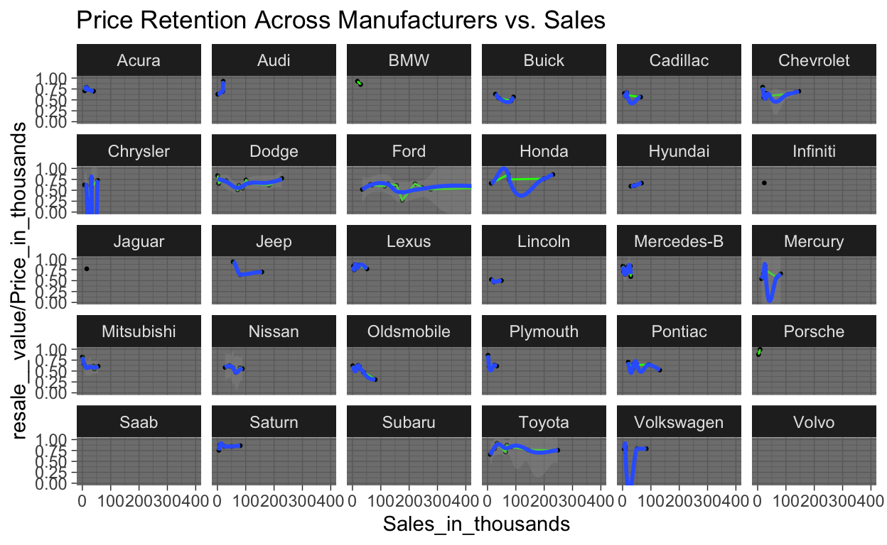
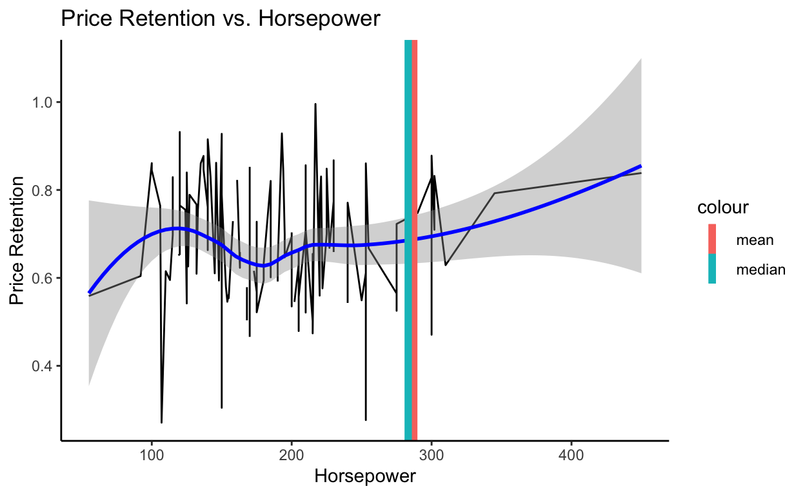
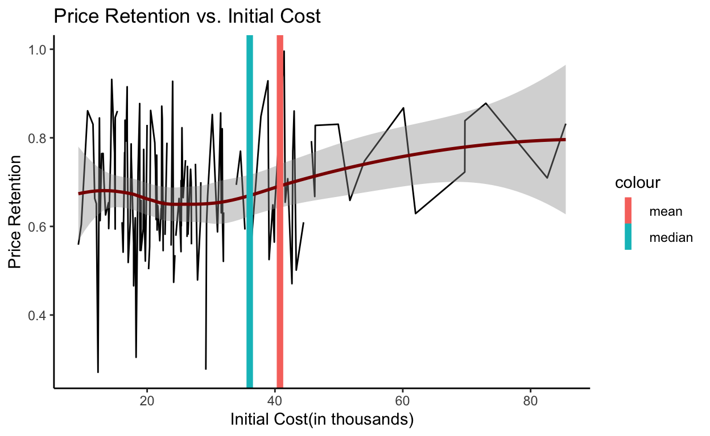
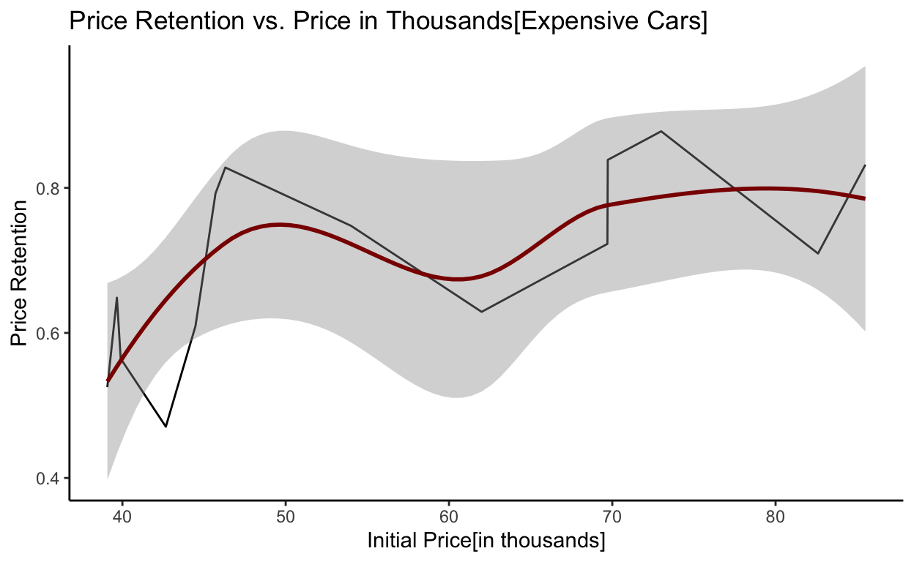
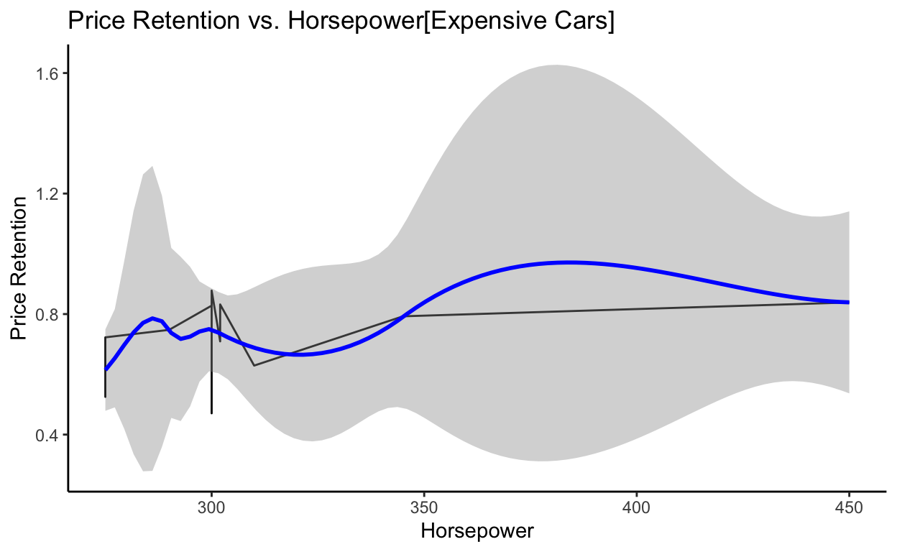
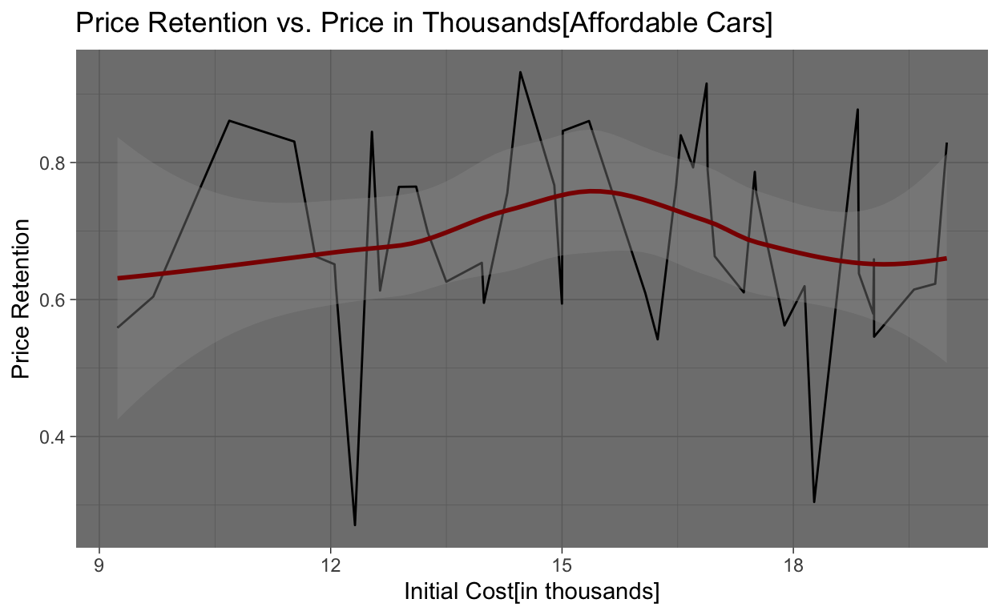
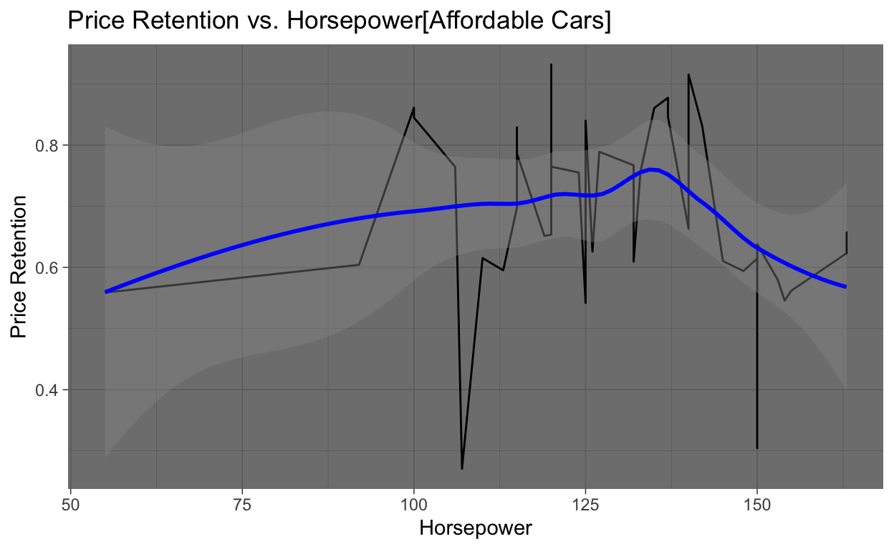

2000 Audi A8The time consuming quest to find which year the data was compiled during:
The most crucial part of tidying my data was to address the NA values. However, before I could begin inputting NA values, I had two major issues.
- I was not sure which years were used to compile this data.
- I was also not sure whether this data was compiled using multiple years or one single year.
I chose to begin my search using carsalesbase.com. This website includes worldwide sales for virtually every year after 1990. I first hypothesized the data was conducted in 2012, indicated by the “latest_launch” column. In order to find the year used to report total sales, I first tried investigating American cars where worldwide sales would be fairly negligible (as American cars do not sell well worldwide, the vast majority are bought in America).
For 2008 in the US, Dodge Viper sales were 1.172 (in thousands). For 2007 (the latest data available for Dodge Viper sales), the sales were 103. ——>The closest number based on the data entered on the initial data set with relation to car sales was in 2008.
However, 2008 seemed improbable as the data frame includes the Chevrolet Camero which was not produced between 2005-2008. I also found the number of Chevrolet Camaro sales was considerably lower than virtually any sales for the model in recent history (which did not make much sense).
I also noticed the Chrysler Cirrus (included on this data set) was only produced from June 1994-2000. The “latest_launch” variable claims the latest launch of this model was 10/6/2011, which is clearly not true. —>The closest year for the Chrysler Cirrus entry was in 1999.
Audi A8 sales in 1999 were higher in the US sales recorded in the data set by over 1,000 units (which is considerable given that not many units of the Audi A8 are sold in general). Therefore, this led me to believe the data entered for this set was not conducted based on one particular year alone.
The closest amount in sales for the Chevrolet Corvette was in 1996. Therefore, I now began to think the sales figure was entered across a range of years as opposed to one particular year.
While attempting to input market price information for the BMW 3 Series, I finally found the year the data set was compiled during. I found it by using an obscure model in my data set (which was deleted and compiled into a “3 Series” row but temporarily resurrected for research purposes): the BMW 323i. The last year of production for the BMW 323i occurred in year 2000. Additionally, the last year of production for the Chrysler Cirrus was also in year 2000. Therefore, I hypothesized the data for this set was derived from year 2000. At this juncture, I searched MSRP values for year 2000 across various car databases and finally found that “Price_in_thousands” was generated using the lower end estimate from cars.com. At this point, I was certain that the price for each car was calculated using data for year 2000.
Sources: (https://www.cars.com/research/bmw-323/)
The task of finding a way to implment all the missing NA values for the “resale value” column
Though I had found the year used for sale price was 2000, I still needed to find the year used for the resale price. However, this information was impossible to find. In my experience, it was not possible to find the approximate resale value for a specific car during a specific year. Therefore, I decided to approximate each the resale values myself using an equation I created.
NA (for resale value) = Sales_in_thousands - (price_in_thousands - resale__price)/(number of other models) ^^^ remember that you repeat this step for as many models made by the manufacturer that don’t include the model with the NA value and add the sum together. This sum is then divided by however many other models there are that do not include the NA value. This figure is then subtracted from the original market price of the car.
During Office Hours, I was informed about the possibility of using Multiple Imputation to seamlessly approximate all of my missing values for “resale value.” However, I had a great deal of trouble attempting to access the mice function (which is a crucial part of Multiple Imputation). Therefore, I chose to enter the missing values by hand using the equation I generated.
It is also important to note that several manufacturers had the resale values missing for every model making my equation redundant and the task of approximation very difficult (as I have no other models to base my resell assumptions off of). Therefore, I am choosing to leave these values as NA having no way to accurately and numerically calculate the resell value.
myDataPath[myDataPath$Sales_in_thousands==14.785,4] <- 30.858
#changed resell value of Cadillac Escalade
myDataPath[myDataPath$Sales_in_thousands==14.114,5] <- 23.100
#added price for the Acura CL, used year 1999 because the Acura Cl was not made in year 2000 (hence why it was missing in the first place) via Cars.com
myDataPath[myDataPath$Sales_in_thousands==107.995,4] <- 11.956
#added resell value of Chevrolet Impala
myDataPath[myDataPath$Sales_in_thousands==30.696,4] <- 8.072
#added resell value of Chrysler 300M
myDataPath[myDataPath$Sales_in_thousands==101.323,4] <- 19.349
#added resell value of Dodge Durango
myDataPath[myDataPath$Sales_in_thousands==175.670,4] <- 3.334
#added resell value of Ford Focus
myDataPath[myDataPath$Sales_in_thousands==15.467,4] <- 33.000
#Estimated Jaguar with a rather low resale keeping in mind that Jaguar models have some of the worst resale of any car in 2019. Overall, Jaguars are well known to depreciate very quickly. With no other models to compare to and use my equation on, I had to eyeball the Jaguar resale price.
myDataPath[myDataPath$Sales_in_thousands==15.467,2] <- "S-Type"
#Re-added the model name for the Jaguar because I accidentally deleted it.
myDataPath[myDataPath$Sales_in_thousands==3.334,4] <- 38.342
#added resell value of Lexus GS400
myDataPath[myDataPath$Sales_in_thousands==9.126,4] <- 52.142
#added resell value of Lexus LS470
myDataPath[myDataPath$Sales_in_thousands==51.238,4] <- 26.642
#added resell value of Lexus RX300
myDataPath[myDataPath$Sales_in_thousands==22.925,4] <- 20.080
#added resale value of Lincoln Navigator
myDataPath[myDataPath$Sales_in_thousands==11.592,4] <- 27.231
#added resale value of Mercedes CLK Coupe
myDataPath[myDataPath$Sales_in_thousands==0.954,4] <- 71.131
#added resale value of Mercedes CL500
myDataPath[myDataPath$Sales_in_thousands==28.976,4] <- 20.931
#added resale of Mercedes M-Class
myDataPath[myDataPath$Sales_in_thousands==54.158,4] <- 13.244
#added resale of Nissan Xterra
myDataPath[myDataPath$Sales_in_thousands==65.005,4] <- 8.335
#added resale of Nissan Frontier
myDataPath[myDataPath$Sales_in_thousands==38.554,4] <- 11.444
#added resale of Oldsmobile Intrigue
myDataPath[myDataPath$Sales_in_thousands==80.255,4] <- 5.564
#added resale of Oldsmobile Alero
myDataPath[myDataPath$Sales_in_thousands==1.872,4] <- 37.002
#added resale of Plymouth Prowler
myDataPath[myDataPath$Sales_in_thousands==39.572,4] <- 17.046
#added resale of Pontiac Montana
myDataPath[myDataPath$Sales_in_thousands==8.472,4] <- 16.525
#added resale of Saturn LW
myDataPath[myDataPath$Sales_in_thousands==49.989,4] <- 12.700
#added resale of Saturn LS
myDataPath[myDataPath$Sales_in_thousands==65.119,4] <- 18.858
#added resale of Toyota Sienna
myDataPath[myDataPath$Sales_in_thousands==53.480,5] <- 26.800
#added price for the Chrysler Town & Country via Cars.com
myDataPath[myDataPath$Sales_in_thousands==53.480,6] <- 3.3
#added the engine size for the Chrysler Town & Country via Edmunds.com.
myDataPath[myDataPath$Sales_in_thousands==53.480,7] <- 158
#added the horse power for the Chrysler Town & Country via Edmunds.com.
myDataPath[myDataPath$Sales_in_thousands==53.480,8] <- 119.3
#added the wheelbase for the Chrysler Town & Country via Edmunds.com
myDataPath[myDataPath$Sales_in_thousands==53.480,9] <- 76.8
#added the width for the Chrysler Town & Country via Edmunds.com
myDataPath[myDataPath$Sales_in_thousands==53.480,10] <- 199.7
#added the length for the Chrysler Town & Country via Edmunds.com
myDataPath[myDataPath$Sales_in_thousands==53.480,11] <- 4.045
#added the curb weight for the Chrysler Town & Country via Edmunds.com
myDataPath[myDataPath$Sales_in_thousands==53.480,12] <- 20.0
#added the fuel capacity for the Chrysler Town & Country via Edmunds.com
myDataPath[myDataPath$Sales_in_thousands==53.480,13] <- 18.0
#added the fuel efficiency for the Chrysler Town & Country via Edmunds.com
myDataPath[myDataPath$Model=="Seville",11] <- 3.970
#added the curb weight for the Cadillac Seville via Edmunds.com
myDataPath[myDataPath$Price_in_thousands==22.505,13] <- 28.0
#added the fuel efficiency for the Dodge Intrepid via Edmunds.com
myDataPath[myDataPath$Curb_weight==3.455 & myDataPath$Length==195.9,13] <- 20.0
#added the fuel efficiency for the Oldsmobile Intrigue via Edmunds.com
ggplot(myDataPath,
aes(x = Sales_in_thousands, y = resale__value/Price_in_thousands)) +
coord_cartesian(xlim = c(0, 400), ylim = c(0, 1)) +
geom_point(size = 0.5) +
geom_line(colour = "green") +
geom_smooth() +
facet_wrap(~Manufacturer) +
labs(title = "Price Retention Across Manufacturers vs. Sales",
x = "Sales(in thousands)",
y = "Price Retention")+
theme_dark()

Ultimately, I wish to compare how much value cars hold across all manufacturers. To do this, I created a visualization that compares the sales to what I will call the “price retention” given by (resale price/price). The “price retention” outputs a ration that can be used to compare how much value each car maintains in relation to one another.
I hypothesized Porsche would have the highest resale value of any manufacturer in the data set. I have a friend that knows a great deal about car resale prices and he once told me Porsches hold their value the best of any car on the market. Therefore, Porsches can sometimes be investments that quadruple in value due to their efficiency and cult following.
As the visualization indicates, though Porsche does not sell anywhere near as many units as the likes of Ford or Toyota, the price retention of Porsches is the very best. Other German contemporaries like BMW and Mercedes-Benz also have high price retention ratios. Contrastingly, the price retention for American manufacturers like Oldsmobile, Pontiac, Mercury, and Lincoln are among the very worst. I hope to find in my research why this is.
myDataPath <- mutate(myDataPath, "Price_Retention" = resale__value/Price_in_thousands)
ggplot(myDataPath,
aes(x = Horsepower, y = Price_Retention)) +
geom_line(color = "black") +
geom_smooth(color = "blue") +
geom_vline(aes(xintercept = mean(Horsepower/Price_Retention, na.rm = TRUE), color = 'mean'), show.legend = TRUE, size = 2) +
geom_vline(aes(xintercept = median(Horsepower/Price_Retention, na.rm = TRUE), color = 'median'), show.legend = TRUE, size = 2) +
labs(title = "Price Retention vs. Horsepower",
x = "Horsepower",
y = "Price Retention") +
theme_classic()

Overall, the following data tells us several things. For one, a correlation does exist between price retention and horsepower. There is essentially an ideal band where price retention is particularly high for cars under around 165 horsepower. Similarly, another band exists before the mean and median where the price retention increases as the horsepower increases (at around 265 horsepower). Cars that fall in between these two “hot spots” suffer from having the lowest Price Retention overall.
As we can already deduce, Horsepower is obviously strongly correlated to price. Typically, the more expensive a car is, the more horsepower it tends to have. Next, we will look at the price retention versus the initial price of the car. The correlation between horsepower and price retention indicates that there must also be “hot spot” in initial cost versus price retention.
ggplot(myDataPath,
aes(x = Price_in_thousands, y = Price_Retention)) +
geom_line(color = "black") +
geom_smooth(color = "dark red") +
geom_vline(aes(xintercept = mean(Price_in_thousands/Price_Retention, na.rm = TRUE), color = 'mean'), show.legend = TRUE, size = 2) +
geom_vline(aes(xintercept = median(Price_in_thousands/Price_Retention, na.rm = TRUE), color = 'median'), show.legend = TRUE, size = 2) +
labs(title = "Price Retention vs. Initial Cost",
x = "Initial Cost(in thousands)",
y = "Price Retention") +
theme_classic()

Indeed! There is a certain sweet spot regarding Price Retention versus the initial price of the car. Essentially, cars that are less that about 20k exist in the “hot spot” regarding price retention for the inexpensive car market. Cars over around 37k exist in a “hot spot” where the higher the initial cost of the car is, the more it will resell for.
At this point, we now have to try and investigate the cars with the lowest price retention to see if their low price retention occurs due to failing to exist in the sweet spots of the Price and Horsepower variables.
myDataPath %>%
select(Manufacturer, Model, Price_in_thousands, Horsepower, Price_Retention) %>%
arrange(Price_Retention) %>%
slice(1:20)
Manufacturer Model Price_in_thousands Horsepower
1 Ford Focus 12.315 107
2 Chrysler 300M 29.185 253
3 Oldsmobile Alero 18.270 150
4 Nissan Frontier 17.890 170
5 Lincoln Navigator 42.660 300
6 Oldsmobile Intrigue 24.150 215
7 Buick LeSabre 27.885 205
8 Lincoln Town car 43.330 215
9 Dodge Stratus 20.230 168
10 Ford Contour 17.035 170
11 Ford Explorer 31.930 210
12 Pontiac Grand Am 19.720 175
13 Lincoln Continental 39.080 275
14 Chevrolet Camaro 24.340 200
15 Mercury Mystique 16.240 125
16 Buick Regal 25.300 240
17 Dodge Intrepid 22.505 202
18 Mitsubishi Eclipse 19.047 154
19 Chevrolet Lumina 18.890 175
20 Oldsmobile Aurora 36.229 250
Price_Retention
1 0.2707268
2 0.2765804
3 0.3045430
4 0.4659027
5 0.4706985
6 0.4738716
7 0.4791106
8 0.5013847
9 0.5034602
10 0.5186381
11 0.5211400
12 0.5218053
13 0.5252047
14 0.5351274
15 0.5418719
16 0.5430830
17 0.5454343
18 0.5457552
19 0.5457914
20 0.5490077Now we will check to see if the top 20 cars with the lowest Price Retentions have low Price Retentions because they fail to hit the sweet spots for cost and horsepower.
myDataPath %>%
select(Manufacturer, Model, Price_in_thousands, Horsepower, Price_Retention) %>%
arrange(Price_Retention) %>%
filter(Price_Retention < 0.5490077) %>%
filter(Horsepower <= 165, Price_in_thousands < 20)
Manufacturer Model Price_in_thousands Horsepower Price_Retention
1 Ford Focus 12.315 107 0.2707268
2 Oldsmobile Alero 18.270 150 0.3045430
3 Mercury Mystique 16.240 125 0.5418719
4 Mitsubishi Eclipse 19.047 154 0.5457552As we can see, only 4 cars fall within out of the lower sweetspot for Price and Horsepower.
myDataPath %>%
select(Manufacturer, Model, Price_in_thousands, Horsepower, Price_Retention) %>%
arrange(Price_Retention) %>%
filter(Price_Retention < 0.5490077) %>%
filter(Horsepower >= 265, Price_in_thousands >= 37)
Manufacturer Model Price_in_thousands Horsepower
1 Lincoln Navigator 42.66 300
2 Lincoln Continental 39.08 275
Price_Retention
1 0.4706985
2 0.5252047As we can see, only 2 car fall within the higher sweetspot for Price and Horsepower.
Therefore, at least 70% of the cars with the lowest price retention suffer this issue because they’re price and/or horsepower are not ideal. As the research indicates, there is a sweet spot that vehicles that tend to have a high price retention tend to fall between. The sweet spot exists for inexpensive vehicles and expensive vehicles.
We can deduce that most people in the car market are either looking to purchase an inexpensive car with low performance or an expensive car with high performance. Cars that fall in between these two sweet spots have much lower price retentions overall.
19 out of the top 20 cars with the lowest price retention are American cars also. This demonstrates that American cars do nto fail to have high Price retention because they are American. They fail to have high price retentions because their Japanese and German contemporaries understand the wants of their consumer better.
Cars_Price_Horsepower_PriceRetention <- select(myDataPath, Manufacturer, Model, Price_in_thousands, Horsepower, Price_Retention)
Affordable_Car_Sweetspot <- filter(Cars_Price_Horsepower_PriceRetention, Horsepower <= 165, Price_in_thousands < 20)
Expensive_Car_Sweetspot <- filter(Cars_Price_Horsepower_PriceRetention, Horsepower >= 265, Price_in_thousands >= 37)
Affordable_Car_Sweetspot %>%
slice(1:10)
Manufacturer Model Price_in_thousands Horsepower
1 Chevrolet Cavalier 13.260 115
2 Chevrolet Prizm 13.960 120
3 Chevrolet Metro 9.235 55
4 Chrysler Sebring Coupe 19.840 163
5 Chrysler Cirrus 16.480 132
6 Dodge Neon 12.640 132
7 Dodge Avenger 19.045 163
8 Dodge Dakota 16.980 120
9 Dodge Caravan 19.565 150
10 Ford Escort 12.070 110
Price_Retention
1 0.6975867
2 0.6536533
3 0.5587439
4 0.6229839
5 0.7669903
6 0.6131329
7 0.6587031
8 0.6631331
9 0.6146179
10 0.6151616American cars that do fall within the sweetspots of the data tend to have higher price retentions that their contemporaries that do not. This proves that even American cars can maintain their well, so long as they fit within the sweetspots of horsepower and price.
Manufacturer Model Price_in_thousands Horsepower
1 Porsche 911 Series 72.995 300
2 Dodge Viper 69.725 450
3 Mercedes-B CL500 85.500 302
4 Lexus GS400 46.305 300
5 Chevrolet Corvette 45.705 345
6 Lexus LS400 54.005 290
7 Mercedes-B S-Class 69.700 275
8 Mercedes-B SL-Class 82.600 302
9 Cadillac Eldorado 39.665 275
10 Audi A8 62.000 310
Price_Retention
1 0.8779779
2 0.8385801
3 0.8319415
4 0.8280315
5 0.7925829
6 0.7476160
7 0.7227403
8 0.7094431
9 0.6485567
10 0.6290323Here again, we see that American cars can maintain their value quite well, so long as they they meet the sweetspots of horsepower and price. In fact, of all the cars in this data set entirely, the car that has the second best price retention of any is American!
Why does it resell so well you ask? For one, more expensive cars that hit the ideal thresholds for horsepower and price tend to hold their value better overall. However, the viper does exceptionally because it has so much horsepower for a great price. In other words, Dodge understood their audience with the viper and built a very fast and expensive car much like their contemporaries also did.
Call:
lm(formula = Price_in_thousands ~ Price_Retention, data = Expensive_Car_Sweetspot)
Residuals:
Min 1Q Median 3Q Max
-20.4977 -6.4257 -0.9336 9.0823 25.1021
Coefficients:
Estimate Std. Error t value Pr(>|t|)
(Intercept) 1.832 21.216 0.086 0.9326
Price_Retention 78.464 29.858 2.628 0.0221 *
---
Signif. codes: 0 '***' 0.001 '**' 0.01 '*' 0.05 '.' 0.1 ' ' 1
Residual standard error: 13.8 on 12 degrees of freedom
Multiple R-squared: 0.3653, Adjusted R-squared: 0.3124
F-statistic: 6.906 on 1 and 12 DF, p-value: 0.02206Based on our R-squared variable, we can see that the price is about 37% correlated to the price retention for expensive cars. Now lets look at the model as a graph.
Expensive_Car_Price_Sim <- lm(Price_in_thousands~Price_Retention, data = Expensive_Car_Sweetspot)
ggplot(Expensive_Car_Price_Sim,
aes(x = Price_in_thousands, y = Price_Retention)) +
geom_line(color = "black") +
geom_smooth(color = "dark red") +
labs(title = "Price Retention vs. Price in Thousands[Expensive Cars]",
x = "Initial Price[in thousands]",
y = "Price Retention") +
theme_classic()

Interestingly, our model indicates that there is also a dip in the 50 to 70k price range regarding Price Retention versus Price. This is something our data does not tell us initially. Furthermore, the model indicates that after the 80k mark, the graph goes down regarding price retention. This tells us that the relationship between Price and Price Retention is not entirely linear at all. In fact, it is much less linear that it would have seemed originally.
Call:
lm(formula = Horsepower ~ Price_Retention, data = Expensive_Car_Sweetspot)
Residuals:
Min 1Q Median 3Q Max
-34.35 -24.40 -11.90 11.72 122.08
Coefficients:
Estimate Std. Error t value Pr(>|t|)
(Intercept) 191.20 65.53 2.918 0.0129 *
Price_Retention 163.04 92.23 1.768 0.1025
---
Signif. codes: 0 '***' 0.001 '**' 0.01 '*' 0.05 '.' 0.1 ' ' 1
Residual standard error: 42.61 on 12 degrees of freedom
Multiple R-squared: 0.2066, Adjusted R-squared: 0.1405
F-statistic: 3.125 on 1 and 12 DF, p-value: 0.1025Based on our R-squared variable, we can see that horsepower is about 21% correlated to the price retention for expensive cars. N
Expensive_Car_HP_Sim <- lm(Horsepower~Price_Retention, data = Expensive_Car_Sweetspot)
ggplot(Expensive_Car_HP_Sim,
aes(x = Horsepower, y = Price_Retention)) +
geom_line(color = "black") +
geom_smooth(color = "blue") +
labs(title = "Price Retention vs. Horsepower[Expensive Cars]",
x = "Horsepower",
y = "Price Retention") +
theme_classic()

The following curve demonstrates that the model predicts a dip in the data that our initial visualizations did not demonstrates. As we can see, there is a dip in the price retention for cars between 300 and 340 horsepower. Furthermore, there is a peak where the Price Retention is the very highest regarding horsepower at around 370 hp. After that point, the model indicates that the price retention will actually be less.
Call:
lm(formula = Price_in_thousands ~ Price_Retention, data = Affordable_Car_Sweetspot)
Residuals:
Min 1Q Median 3Q Max
-6.1232 -2.4535 0.0207 2.1787 4.6577
Coefficients:
Estimate Std. Error t value Pr(>|t|)
(Intercept) 15.41173 2.20716 6.983 1.36e-08 ***
Price_Retention -0.09573 3.14987 -0.030 0.976
---
Signif. codes: 0 '***' 0.001 '**' 0.01 '*' 0.05 '.' 0.1 ' ' 1
Residual standard error: 2.937 on 43 degrees of freedom
(1 observation deleted due to missingness)
Multiple R-squared: 2.148e-05, Adjusted R-squared: -0.02323
F-statistic: 0.0009237 on 1 and 43 DF, p-value: 0.9759As we can see, for Affordable cars, our R-squared value indicates that Price and Retention are very correlated.
Affordable_Car_Price_Sim <- lm(Price_in_thousands~Price_Retention, data = Affordable_Car_Sweetspot)
ggplot(Affordable_Car_Price_Sim,
aes(x = Price_in_thousands, y = Price_Retention)) +
geom_line(color = "black") +
geom_smooth(color = "dark red") +
labs(title = "Price Retention vs. Price in Thousands[Affordable Cars]",
x = "Initial Cost[in thousands]",
y = "Price Retention") +
theme_dark()

As we can see in the graph, our model is telling us that there is a sweet spot in price retention for affordable cars that we could not see initially in the prior visualizations. At about the 16k price point, our model predicts that cars will retain their value the best.
Call:
lm(formula = Horsepower ~ Price_Retention, data = Affordable_Car_Sweetspot)
Residuals:
Min 1Q Median 3Q Max
-75.160 -11.090 0.844 15.739 34.578
Coefficients:
Estimate Std. Error t value Pr(>|t|)
(Intercept) 139.88 15.59 8.969 2.1e-11 ***
Price_Retention -17.39 22.26 -0.781 0.439
---
Signif. codes: 0 '***' 0.001 '**' 0.01 '*' 0.05 '.' 0.1 ' ' 1
Residual standard error: 20.75 on 43 degrees of freedom
(1 observation deleted due to missingness)
Multiple R-squared: 0.014, Adjusted R-squared: -0.008933
F-statistic: 0.6104 on 1 and 43 DF, p-value: 0.4389Lastly, we will look at the model for Affordable Cars vs. Horsepower. According to our R-squared value, we can deduce that the correlation between Price Retention and Horsepower for affordable cars is almost negligible at just 1.4%. In other words, horsepower has basically no effect on price retention for affordable cars.
Affordable_Car_HP_Sim <- lm(Horsepower~Price_Retention, data = Affordable_Car_Sweetspot)
ggplot(Affordable_Car_HP_Sim,
aes(x = Horsepower, y = Price_Retention)) +
geom_line(color = "black") +
geom_smooth(color = "blue") +
labs(title = "Price Retention vs. Horsepower[Affordable Cars]",
x = "Horsepower",
y = "Price Retention") +
theme_dark()

The model predicts there is a small sweet spot for horse power at about the 130 horsepower mark. Additionally, the model suggests that any more than 130 horsepower is gradually less ideal for affordable cars.